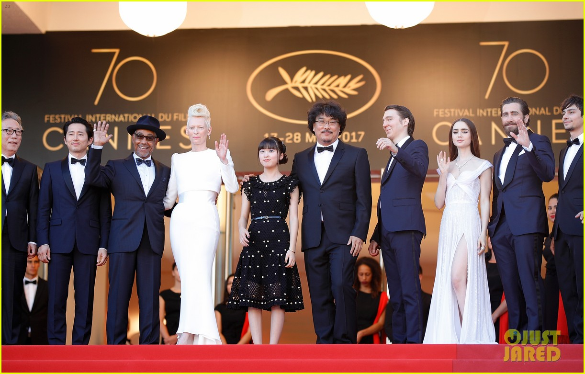

The Cannes Festival (/kæn/; French: Festival de Cannes), until 2002 called the International Film Festival (Festival international du film) and known in English as the Cannes Film Festival, is an annual film festival held in Cannes, France, which previews new films of all genres, including documentaries from all around the world. Founded in 1946, the invitation-only festival is held annually (usually in May) at the Palais des Festivals et des Congrès.
It is one of the "Big Three" alongside the Venice Film Festival and Berlin International Film Festival.On 1 July 2014, co-founder and former head of French pay-TV operator Canal+, Pierre Lescure, took over as President of the Festival, while Thierry Fremaux became the General Delegate. The board of directors also appointed Gilles Jacob as Honorary President of the Festival.
The 2018 Cannes Film Festival took place between 8 and 19 May 2018. The jury president was Australian actress Cate Blanchett, and Shoplifters, directed by Hirokazu Kore-eda, won the Palme d'Or